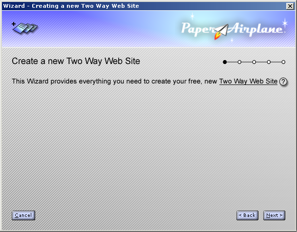
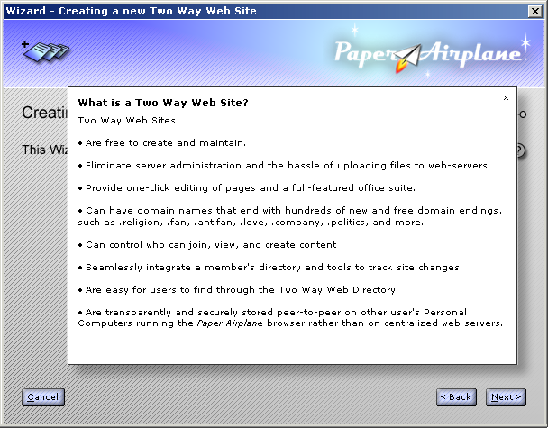
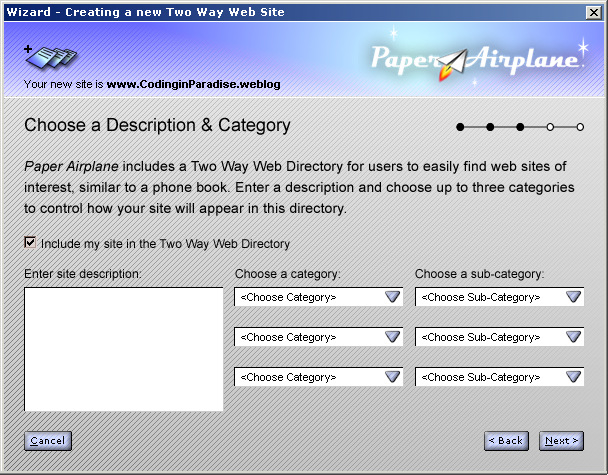

| | |
Table of Contents | Last | Next
Walkthrough - Seamless Collaboration
Create New Two Way Web Sites with the Click of a Button
Creating a new Two Way Web Site is amazingly easy. To start, simply click on the New Site icon:

The New Site Icon
This starts the New Site Wizard:

The First Step of the New Site Wizard
Clicking the question mark after the word Two Way Website will show an informational popup providing more information:

"What is a Two Way Web Site?" Popup in the New Site Wizard
Next, choose an online name for your new Two Way Web Site:

The Second Step of the New Site Wizard
You can choose from thousands of endings for your web-site. Now instead of simply having sites that end in .com, .org, or .net, you can have sites that end with .love, .politics., .name, .marryme, and more. Why not create a Two Way Web Site named www.Eunice.marryme? For more information on endings see below, Domain Names are Dead, Long Live Domain Names!.
Next, choose a description and category so that your site can be listed in The Two Way Web Directory:

The Third Step of the New Site Wizard
Fourth, choose your membership policy. Two Way Web Sites only have three roles: Managers, Members, and Non-Members. Managers can add and remove members, and can edit and delete pages. Members can create and edit pages, but can not delete them or manage other members. What Non-Members can and can't do depend on how open or closed you decide to make your site.
On the Choose Your Membership Policy step you can decide how public or private you would like your site to be:

The Fourth Step of the New Site Wizard
Now you're ready to go! Simpy give your new web site's online name to friends and family to have them start joining. Make sure they download the Paper Airplane browser before they access your site.